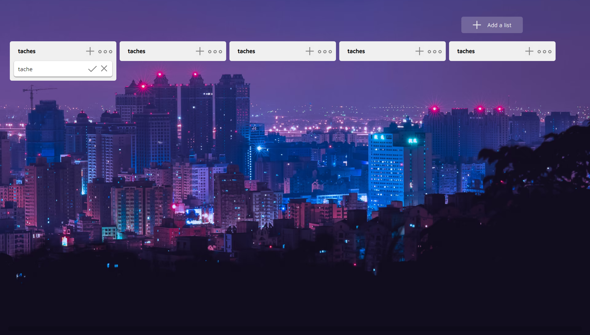

Projet 02
Clone Trello
Missions
- Front avec React
- Design
Durée
3 semaines
Le projet Clone Trello est un site que j'ai réalisé seul. Pour commencer à apprendre React, j'ai décidé de faire une "copie" de certaines fonctionnalités de l'application Trello. Elle me semblait très adaptée aux systèmes de composants que React apporte. J'ai donc pu, à travers ce projet, découvrir le framework et utiliser les principaux Hooks.

Scroll
